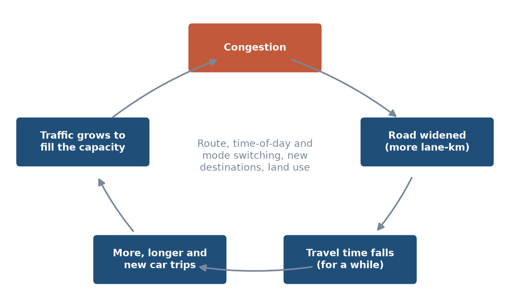
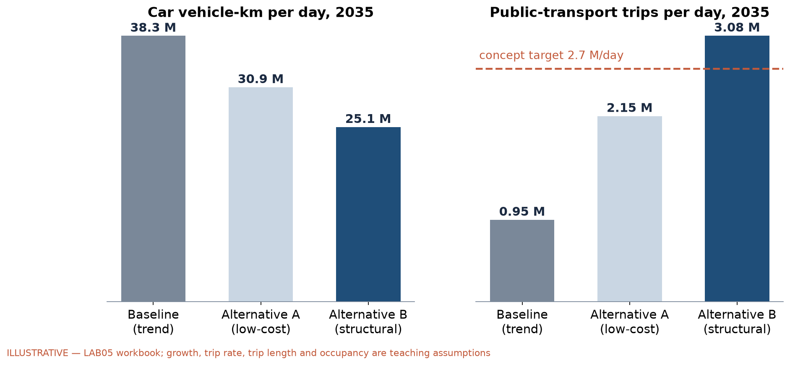
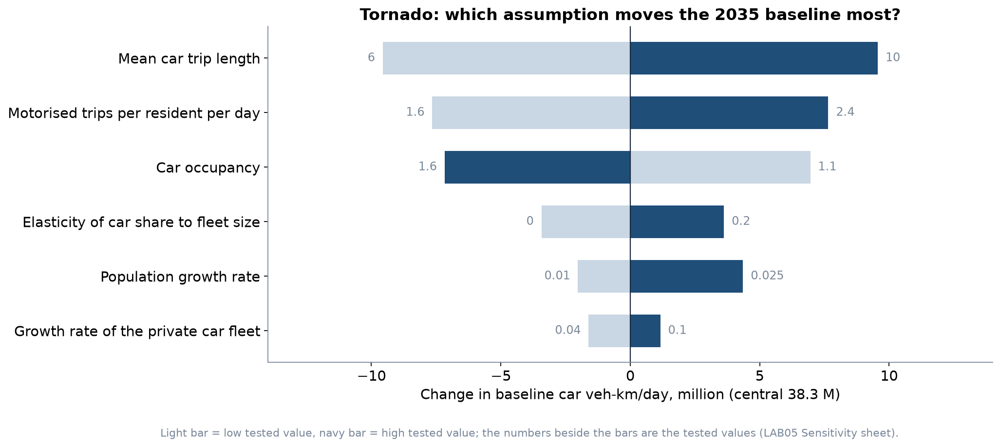

LEC10 · Urban Transport Systems Planning and Design · TSTU · Prof. J. Sodikov
1 / 24
What you will be able to do after today
Explain induced demand and summarise the evidence for it
Choose demand-management measures — pricing, priority, walking and cycling
Contrast forecast-led expansion with objective-led scenarios
Test which assumptions drive a scenario result
2 / 24
This lecture is about managing travel demand instead of only building for it. You will learn what induced demand is and what the evidence says about it. You will choose demand-management measures such as pricing, bus priority, and walking and cycling networks. You will also compare expansion led by forecasts with scenarios led by objectives, and test which assumptions drive a result.
Predict-and-provide versus decide-and-provide
Predict-and-provide: forecast traffic, then build capacity to meet it
Decide-and-provide: set objectives first, then shape demand to meet them
SUMP guidelines put objectives and indicators before measures
A published planning course uses the highway revolt in Boston to show the political limits of predict-and-provide
3 / 24
Predict-and-provide means forecasting traffic and then building enough capacity to meet it. Decide-and-provide works the other way round: set the objectives first, then shape demand to meet them. The guidelines for Sustainable Urban Mobility Plans (SUMP) follow the second approach and put objectives and indicators before measures. A published course on urban transportation planning uses the highway revolt in Boston to show the political limits of predict-and-provide.
Induced demand: the feedback loop

Faster roads lower the cost of driving; people respond until congestion returns.
4 / 24
The figure shows induced demand as a loop. A faster road lowers the cost of driving, so people respond. They switch route, time of day, mode or destination, make new trips, and over time homes and jobs move. Traffic grows until congestion returns, and much of the time saving is lost.
Where does the extra traffic come from?
Route and time-of-day switching (short run)
Mode switching from bus, walking and cycling to car
Longer trips to more distant destinations
New trips that were not made before
Land use: homes and businesses move to newly accessible places (long run)
5 / 24
Extra traffic on a widened road comes from several responses. In the short run, drivers switch from other routes and other times of day. People also switch from bus, walking and cycling to the car, travel to more distant destinations, and make trips they did not make before. In the long run, homes and businesses move to the places that became easier to reach.
The evidence
SACTRA (1994): monitoring of 151 trunk-road schemes — induced traffic is real and matters
Duranton & Turner (2011): vehicle-km rise proportionately to lane-km in US cities
Noland (2026): elasticities across thirty years of studies converge towards 1.0
Bucsky & Juhász (2022): 55 years of Budapest bridges — less capacity, less traffic
6 / 24
SACTRA (1994) reviewed the Department of Transport's monitoring of 151 trunk-road schemes and concluded that induced traffic is real and matters. Duranton and Turner (2011) found that vehicle-kilometres in US cities rise in proportion to lane-kilometres. Noland (2026) reports that elasticities from thirty years of studies converge towards 1.0. An elasticity of 1.0 means that 10% more lane-km brings about 10% more vehicle-km. Bucsky and Juhász (2022) used 55 years of data on Budapest bridges and found that less capacity meant less traffic, so capacity changes push traffic up and down.
Worked example: widening Tashkent's main roads (LAB5)
Baseline 2035: 38.3 million veh-km/day of car travel (teaching assumptions)
Add 10% more lane-km; induced-demand elasticity 1.0
Result: about 3.8 million veh-km/day of extra traffic
A fixed-demand forecast would have predicted zero extra traffic — and big time savings
7 / 24
LAB5 tests what widening Tashkent's main roads would do in 2035, using teaching assumptions. The baseline has 38.3 million vehicle-kilometres (veh-km) of car travel per day. Adding 10% more lane-km with an elasticity of 1.0 brings about 3.8 million veh-km/day of extra traffic. A forecast with fixed demand would predict no extra traffic and large time savings, which would mislead the decision.
Implication: capacity cannot cure congestion
Duranton & Turner also found no effect of public-transport provision on vehicle-km
So congestion relief needs price or space reallocation, not only alternatives
Capacity can still be justified — for access, safety or freight — but not as a cure
Appraisals that ignore induced demand overstate time savings
8 / 24
Duranton and Turner also found no effect of public-transport provision on vehicle-km in US cities. So relieving congestion needs pricing or a new allocation of street space, not only better alternatives. Extra capacity can still be justified for access, safety or freight, but not as a cure for congestion. Appraisals that ignore induced demand overstate the time savings of new roads. Their public-transport finding comes from US cities, so ask how well it transfers to Tashkent.
The demand-management toolbox
Change time, price and convenience — together
9 / 24
The next slides look at the demand-management toolbox. Each measure changes the time, price or convenience of a mode, and measures work best when they change these together.
Measures and the utility term they change
Measure
Changes
Typical Tashkent opportunity
Parking pricing and supply limits
Car cost, search time
Centre streets and footway parking
Bus lanes and junction priority
Bus in-vehicle time, reliability
Main radial corridors (Week 6)
Congestion or cordon charge
Car cost at peak
Long-term option; needs enforcement
Walking and cycling networks
Access time, safety, comfort
Gap closure and safe crossings (Weeks 4, 8)
Land use and parking standards
Trip lengths, destinations
New developments and New Tashkent
10 / 24
The table links each measure to the utility term it changes. Parking pricing and supply limits raise car cost and search time, and bus lanes with junction priority cut bus time and improve reliability. A congestion or cordon charge raises the cost of driving at peak times, but it is a long-term option that needs enforcement. Walking and cycling networks cut access time and improve safety and comfort, while land-use and parking standards change trip lengths and destinations. The last column shows where each measure could fit in Tashkent.
Parking: the strongest local lever
Free parking at the destination makes driving cheap even when roads are full
Price and supply of parking shape car ownership and use
Pulatova's survey: 47.5% of pedestrians say footways are used for car parking
Enforcing footway parking frees walking space and raises the cost of driving
11 / 24
Free parking at the destination makes driving cheap even when the roads are full. The price and supply of parking shape both how many cars people own and how much they use them. In Pulatova's survey, 47.5% of pedestrians said that footways are used for car parking. Enforcing the rules against parking on footways gives walking space back and raises the cost of driving. Parking is covered in more depth in Week 11.
Walking and cycling as demand measures
Cycling benefits in the thesis rest on 5,000 / 15,000 / 30,000 daily users
Central case: 15.0 M km cycled per year, worth about $2.7 M/yr
Even the ambitious case is about 1% of residents — small against millions of car trips
Value lies in short trips, metro access and network effects, not in city-wide totals
12 / 24
Normukhammadov's cycling benefits rest on three assumed levels of 5,000, 15,000 and 30,000 daily users. In the central case, people cycle 15.0 M km per year, worth about $2.7 M/yr. Even the ambitious case is only about 1% of residents, which is small next to millions of car trips. So the value of walking and cycling lies in short trips, access to the metro and network effects, not in city-wide totals.
Objective-led scenarios for Tashkent
Baseline and two alternatives in one assessment year: 2035
13 / 24
The last part of the lecture builds objective-led scenarios for Tashkent. A baseline and two alternatives are compared in one assessment year, 2035, using the LAB5 model.
Three scenarios, one assessment year
Baseline (trend): no new policy; car share grows with the fleet
Alternative A (low-cost): bus lanes, junction priority, parking management
Alternative B (structural): bus-network reform, priority corridors, cycling network, parking pricing
Alternative B is set to the concept target: public transport 43%
Same population, trip rate and trip length in all three — only policy differs
14 / 24
The baseline follows the trend with no new policy, so car share grows with the fleet. Alternative A is low-cost: bus lanes, junction priority and parking management. Alternative B is structural: bus-network reform, priority corridors, a cycling network and parking pricing, with public transport set to the concept target of 43%. Population, trip rate and trip length are the same in all three, so any difference comes from policy alone.
Scenario results (illustrative)

LAB5 workbook. Growth, trip rate, trip length and occupancy are teaching assumptions.
15 / 24
The left chart compares car vehicle-km per day in 2035 for the three scenarios. The right chart compares public-transport trips per day with the concept's daily target. Alternative B is set to the target share, but it carries more passengers than the target since there are more residents in 2035 than today. Growth, trip rate, trip length and occupancy are teaching assumptions, so read the charts as illustrative.
Reading the results
Baseline: car share rises to 86.8% and car travel reaches 38.3 million veh-km/day
Alternative A: 30.9 million veh-km/day
Alternative B: 25.1 million (−34%) veh-km/day
Alternative B carries 1.14 × the concept's daily public-transport target
These are consequences of stated assumptions, not predictions
16 / 24
In the baseline, car share rises to 86.8% and car travel reaches 38.3 million veh-km per day. Alternative A cuts this to 30.9 million, and Alternative B to 25.1 million, which is 34% less than the baseline. Alternative B carries 1.14 times the concept's daily public-transport target. These numbers follow from stated assumptions and are not predictions, so the comparison between scenarios tells you more than any one value.
Which assumption matters most?

One-at-a-time sensitivity of the 2035 baseline (LAB5 Sensitivity sheet).
17 / 24
A tornado chart shows one-at-a-time sensitivity: each input is moved to a low and a high value while the others stay fixed. Each bar shows how much the 2035 baseline car vehicle-km changes, with a light bar for the low value and a navy bar for the high value. The inputs are sorted so that the one with the largest effect is at the top. In LAB5 you build this chart yourself.
What the tornado tells you
Mean car trip length swings the baseline by 19.1 million veh-km/day
Trip length, trip rate and occupancy dominate — and none has an open Tashkent source
Fleet growth, the one sourced rate, matters least
Sensitivity analysis tells you which data to collect first
18 / 24
Moving the mean car trip length across its tested range swings the baseline by 19.1 million veh-km per day. Trip length, trip rate and car occupancy have the largest effects, and none of them has an open Tashkent source. Fleet growth, the one rate with a published source, matters least. So sensitivity analysis tells you which data to collect first.
Critical reading: a local benefit claim
Pulatova (2024): E = 365 × N × R = $19,007,010 per year
N = 173,580, i.e. 10% of 1,735,800 residents walking instead of driving 1,200 m
R = $0.30 per car-km, applied as one car-km per person per day
Hidden assumptions: all switchers were drivers, every day of the year, one person per car
Explicit assumptions in LAB5 give about $6.0 M per year (0.32 ×) — still worth having
19 / 24
Pulatova (2024) claims a saving of $19,007,010 per year from E = 365 × N × R. N is 173,580 people, 10% of the 1,735,800 residents of seven districts, who walk 1,200 m instead of driving. R is $0.30 per car-km, applied as one car-km per person per day. The formula quietly assumes that every switcher was a driver, travels every day of the year and drives alone. With the assumptions stated openly, LAB5 gives about $6.0 M per year, 0.32 times the claim, which is still a useful benefit.
Policy coherence check
The same 2022–2025 concept targets public transport at 43%
It also targets +15% junction capacity for cars
Induced-demand evidence says added capacity fills with traffic
Objective-led planning asks: which target does each measure serve?
20 / 24
The same 2022–2025 concept sets a 43% target for public transport. It also aims to raise the car capacity of junctions by 15%. The induced-demand evidence says that added capacity fills with traffic, so the second target can work against the first. Objective-led planning asks which target each measure serves.
Discussion
Your corridor is congested. Argue for one demand-management measure instead of widening — and name who loses.
Use time, price or convenience in your argument.
21 / 24
Your corridor is congested, and widening is the obvious proposal. Argue instead for one demand-management measure, using time, price or convenience to explain how it works. Then name who loses from it, because an honest argument states the costs as well as the gains.
Key takeaways
Added road capacity induces traffic; the evidence points to elasticities near one
Demand management works by changing time, price and convenience together
Compare a baseline and alternatives in one assessment year, with every assumption labelled
Sensitivity analysis shows which numbers need real data
22 / 24
Adding road capacity induces traffic, and the evidence points to elasticities near one. Demand management works by changing time, price and convenience together. Compare a baseline and alternatives in one assessment year, and label every assumption. Sensitivity analysis shows which numbers most need real data.
References
Salvucci, F. (2016). 1.252J/11.540J Urban Transportation Planning, Fall 2016. MIT OpenCourseWare. https://ocw.mit.edu/courses/1-252j-urban-transportation-planning-fall-2016/
Ben-Akiva, M. (2008). 1.201J/11.545J Transportation Systems Analysis: Demand and Economics, Fall 2008. MIT OpenCourseWare. https://ocw.mit.edu/courses/1-201j-transportation-systems-analysis-demand-and-economics-fall-2008/
Rupprecht Consult (Ed.) (2019). Guidelines for Developing and Implementing a Sustainable Urban Mobility Plan (2nd ed.). European Commission / Eltis. https://www.eltis.org/mobility-plans/sump-guidelines
Duranton, G., & Turner, M. A. (2011). The fundamental law of road congestion: evidence from US cities. American Economic Review, 101(6), 2616–2652. https://doi.org/10.1257/aer.101.6.2616 https://doi.org/10.1257/aer.101.6.2616
van Wee, B., Annema, J. A., Banister, D., & Pudāne, B. (Eds.) (2023). The Transport System and Transport Policy: An Introduction (2nd ed.). Edward Elgar. https://rstrail.nl/the-transport-system-and-transport-policy-an-introduction/
SACTRA — Standing Advisory Committee on Trunk Road Assessment (1994). Trunk Roads and the Generation of Traffic. London: HMSO, Department of Transport. https://openalex.org/W564045229
Noland, R. B. (2026). The empirical evidence for induced travel and implications for practice. Transportation Research Today, 100025. https://doi.org/10.1016/j.trt.2026.100025 https://doi.org/10.1016/j.trt.2026.100025
Bucsky, P., & Juhász, M. (2022). Long-term evidence on induced traffic: a case study on the relationship between road traffic and capacity of Budapest bridges. Transportation Research Part A, 157, 244–257. https://doi.org/10.1016/j.tra.2022.01.018 https://doi.org/10.1016/j.tra.2022.01.018
Synthetic teaching dataset generated for this course (method and random seed in each workbook's README sheet).
Pulatova, Z. S. (2024). Walkability assessment of Tashkent city districts (PhD dissertation, in Uzbek; supervisor J. I. Sodikov). Tashkent State Transport University.
Normukhammadov, A. (2026). Pedalling Towards Sustainability: Developing an Integrated Bicycle Network for Enhanced Urban Mobility in Tashkent City (PhD thesis draft; supervisor J. I. Sodikov). Tashkent State Transport University.